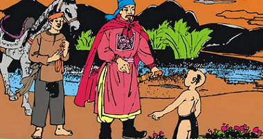
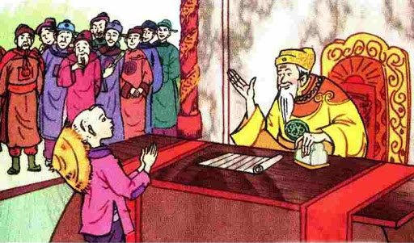

Cậu bé thông minh
Ngày xưa, vua sai một viên quan đi dò la khắp nước tìm người tài giỏi. Viên quan đó đã đi nhiều nơi, đến đâu cũng đưa ra những câu đố oái oăm để hút mọi người, tuy nhiên mất nhiều công sức mà vẫn chưa tìm thấy người nào thật lỗi lạc, xuất chúng.

Một hôm, viên quan đi qua một cánh đồng, chợt thấy bên vệ đường có hai cha con nhà nọ đang làm ruộng, cha đánh trâu cày, con đập đất. Ông bèn dừng ngựa lại hỏi:
- Này ông lão kia! Trâu của lão cày một ngày được mấy đường?
Người cha đứng ngẩn ra chưa biết trả lời thế nào thì đứa con chừng bảy tám tuổi hỏi vặn lại quan:
- Thế xin hỏi ông câu này đã. Nếu ông trả lời được ngựa của ông đi một ngày được mấy bước, tôi sẽ cho ông biết trâu của cha tôi cày một ngày được mấy đường.
Viên quan nghe hỏi lại như thế thì há hốc mồm sửng sốt, không biết đáp sao cho ổn. Ông thầm nghĩ bụng nhất định nhân tài ở đây rồi, chả phải tìm đâu nữa mất công. Quan bèn hỏi tên họ làng xã quê quán của hai cha con rồi phi ngựa một mạch về tâu vua.
Nghe vậy, vua mừng lắm. Nhưng để biết chính xác hơn nữa, vua bèn sai ban cho làng ấy ba thúng gạo nếp vài ba con trâu đực, ra lệnh phải nuôi làm sao cho ba con trâu ấy đẻ thành chín con, hẹn năm sau đem nộp đủ, nếu không thì cả làng phải tội.
Dân làng nhận được lệnh vua ban, ai ấy cũng vừa mừng vừa và lo lắng, không biết làm sao trâu đực đẻ được bây giờ? Bao nhiêu cuộc họp làng, bao nhiêu lời bàn tán, vẫn không nghĩ ra được cách gì giải quyết cả. Từ trên xuống dưới mọi người đều coi là một tai vạ.
Nghe thấy tin này, cậu bé con người thợ cày liền bảo cha:
- Chả mấy khi được lộc vua ban, bố cứ thưa với làng ngả thịt hai trâu và đồ hai thúng gạo nếp để mọi người ăn một bữa thật lớn. Còn một trâu và một thúng gạo, ta sẽ xin làng làm phí tổn cho bố con ta trẩy kinh lo liệu việc đó.
- Đã ăn thịt còn lo liệu thế nào? Con đừng có làm dại mà bay đầu đi đó con ạ!
Nhưng cậu bé quả quyết:
- Cha cứ mặc con lo liệu, thế nào cũng xong xuôi.
Người cha vội ra đình trình bày câu chuyện. Cả làng nghe nói vẫn còn ngờ vực, bắt cha con phải làm giấy cam đoan, mới dám ngả trâu.
Mấy hôm sau, hai cha con khăn gói tìm đường tiến kinh. Đến hoàng cung, con bảo cha đứng đợi ở ngoài, còn mình thì nhân lúc mấy tên lính canh vô ý, lẻn vào sân khóc um lên. Vua sai lính điệu vào phán hỏi:
- Thằng bé kia mày có việc gì? Sao lại đến đây mà khóc?
- Tâu đức vua. Mẹ con chết sớm mà cha con thì không chịu đẻ em bé để chơi với con cho có bạn, cho nên con khóc. Dám mong đức vua phán bảo cha con cho con được nhờ. - Cậu bé vờ vĩnh tâu vua.

Nghe nói, vua và các triều thần đều bật cười. Vua lại phán:
- Cháu muốn có em thì phải kiếm vợ khác cho bố cháu, chứ bố cháu là giống đực làm sao mà đẻ được!
Cấu bé bỗng tươi tỉnh:
- Thế sao làng chúng con lại có lệnh trên bắt nuôi ba con trâu đực cho đẻ thành chín con để nộp đức vua? Giống đực thì làm sao mà đẻ được kia chứ!
Vua cười bảo:
- Ta thử đấy thôi mà? Thế làng chúng mày không biết đem trâu ấy ra ngả thịt mà ăn với nhau à?
- Tâu đức vua, làng chúng con sau khi nhận được trâu và gạo nếp biết là lộc của đức vua, cho nên đã làm cỗ ăn mừng với nhau rồi.
Vua và đình thần chịu thằng bé là thông minh lỗi lạc, nhưng đức vua vẫn còn muốn thử cho đến cùng. Hôm sau, khi hai cha con đang ăn cơm ở nhà công quán, bỗng có sứ nhà vua mang tới một con chim sẻ và lệnh chỉ bắt họ phải dọn thành ba cỗ thức ăn. Em bé lấy một cái kim may rồi đưa cho sứ giả, bảo:
- Ông cầm lấy cái này về tâu đức vua xin rèn cho tôi thành một con dao để xẻ thịt chim.
Vua nghe nói, từ đó mới phục hẳn.
Lập tức vua cho gọi cả cha con vào ban thưởng hậu hĩnh.
***
Lúc bấy giờ, nước láng giềng nhăm nhe muốn chiếm bờ cõi của nước ta. Để dò xem bên này có nhân tài hay không, họ mới sai sứ đưa sang một cái vỏ con ốc vặn rất dài, rỗng hai đầu, đố làm sao xâu một sợi chỉ mảnh xuyên qua đường ruột ốc.
Sau khi nghe sứ thần trình bày mục đích cuộc đi sứ, vua quan đưa mắt nhìn nhau. Không trả lời được câu đố oái oăm ấy tức là thua kém và phải thừa nhận sự lép vế của mình đối với nước láng giềng.
Các đại thần đều vò đầu suy nghĩ. Có người dùng miệng hút mong cho sợi chỉ lọt qua, có người bôi sáp vào sợi chỉ cho cứng để cho dễ xâu... nhưng tất cả mọi cách đều vô hiệu. Bao nhiêu các ông trạng, các nhà thông thái triệu vào đều lắc đầu bó tay. Cuối cùng, triều đình đành tìm cách mời sứ thần tạm nghỉ ở công quán để có thì giờ đi hỏi ý kiến em bé thông minh ngày nọ.
Một viên quan mang dụ chỉ của vua đến nhà em bé vào lúc em còn đùa nghịch ở sau nhà. Nghe quan trình bày ngọn ngành câu đố của sứ giả ngoại quốc, em bé không đáp, chỉ hát lên một câu:
Tang tính tang! Tính tình tang!
Bắt con kiến càng buộc chỉ ngang lưng
Bên thời lấy giấy mà bưng,
Bên thời bôi mỡ, kiến mừng kiến sang
Tang tình tang...
Rồi bảo: - Không cần tôi phải về triều làm gì. Cứ theo cách đó là xâu được ngay!".
Viên quan sung sướng trở về tâu vua. Vua và các triều thần nghe nói như mở cờ trong bụng. Quả nhiên con kiến càng đã xâu được sợi chỉ xuyên qua đường ruột ốc hộ cho nhà vua trước con mắt kính phục của sứ giả nước láng giềng.
Rồi đó, vua phong cho cậu bé làm trạng nguyên. Vua sai xây dinh thự ở một bên hoàng cung cho em ở để tiện hỏi han.